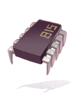

Last Room
| This quest or instance is repeatable. | ||
|---|---|---|
| Cooldown | Tickets Available | |
|
23 hours |
Solo: 0 | Party: 0 |
Overview
| Requirements | |
|---|---|
| Base Level: | 140 |
| Starting Point: | (You need to have a |
| Prerequisite(s): | Joining Phantasmagorica's Excavation Team To Phantasmagorica! Becoming An Atnad Member Looking for the Traces Step 1 of Memory Record Vestige |
| Rewards | |
| Experience: | - |
The Last Room instance is part of the 15.2 Memory Record update, where you get to join a squad of adventurers to uncover the secrets of the hidden pathway under the safety bunker!
To start the instance, talk to Mark at the mysterious location. You can talk to Verity and she will take your Gravity Safety Device to warp you directly to the entrance. The Gravity Safety Device is rewarded after completing the Vestige quest, and you can get another one from Fruit after completing the Last Room instance. If you have an issue and cannot get a Gravity Safety Device, no worries! You can simply redo the last part of the Vestige quest again starting at step 5, and you'll be able to access to the Last Room instance entrance (it won't give you another Gravity Safety Device).
Walkthrough
- Talk to Mark to generate and enter the instance. You can find him at the end of the Vestige's quest.
- Once arrived at the pathway, talk to Verity. You'll find out that she is not feeling well. Tamarin decides to stay with her while the others go ahead.
- Proceed North, and you will hear weird noises. A security system triggers, and monsters will spawn.
These monsters do a lot of damage so it is advised to go slowly. - Eliminate all the monsters in the pathway, then kill the System Message in the south-west corner of the map.
- Head North where you will find Tamarin. Speak to him, and he'll explain that Verity has ran away.
- Head North again and enter the warp, a new security system will trigger.
- Keep walking ahead until you meet another batch of monsters, and Verity at the end of the hallway.
- Talk to Verity and enter the door with her.
- Inside the room, talk to her again. She seems confused.
- The final protocol begins. T_W_O and System Messages will spawn and attack you.
- Eliminate T_W_O. She casts Wide Stone Curse, Wide Soul Drain and Critical Wound. System Messages will spawn as the time continues and start healing her. They are plant protocol.
- After she's defeated, the protocol fails, and everyone appears, worried for Verity who does not remember anything.
- The ground starts shaking, and you will get warped out of the instance.
- Speak with Fruit to get another Gravity Safety Device.


Enemies
| Image | Name | Level | HP | Size / Race / Element |
|---|---|---|---|---|
| Machine Component | 149 | 217,650 | Small / Formless / Dark 2 | |
| Machine Component | 153 | 245,670 | Medium / Formless / Dark 1 | |
| System Message | 153 | 100 | Small / Formless / Neutral | |
| T_W_O | 165 | 48,000,000 | Large / Demon / Dark 3 |
Cards
| Card | Type | Description |
|---|---|---|
| Accessory Card | ASPD +1%.
If Base Level is 90 or higher, ASPD +1%. If Base Level is 120 or higher, ASPD +1%. | |
| Accessory Card | HIT +1.
If Base Level is 90 or higher, HIT +1. If Base Level is 120 or higher, HIT +1. If equipped with GC109 Card, chance to gain ASPD +5 for 5 seconds when using physical attacks. | |
| Weapon Card | ATK +10%.
When dealing melee physical damage, has a chance to drain 40% SP from all enemies within 15x15 AoE around the wearer. Increase chances of SP drain every 3 refine levels. |
Rewards
| Image | Name | Type | Description |
|---|---|---|---|
|  | Runaway Chip [1] | Headgear | Max SP - 50% HIT + 50 FLEE + 50 Set Bonus If Runaway Chip [1] upgrade level is +9 or higher, |

|
Broken Chip 1 [1] | Accessory | STR + 4
Set Bonus |
| Broken Chip 2 [1] | Accessory | INT + 4
Set Bonus |